How to compile nettools using the built-in-to-Windows IExpress program
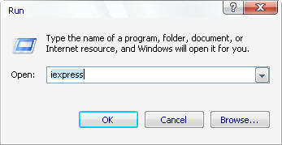
Launch iexpress by the usual methods:
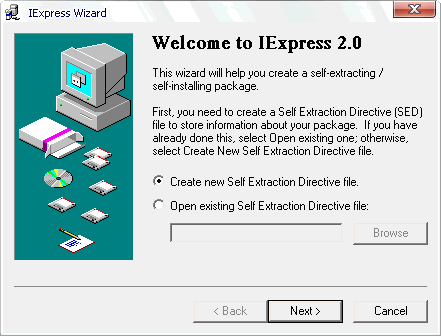
Click Next
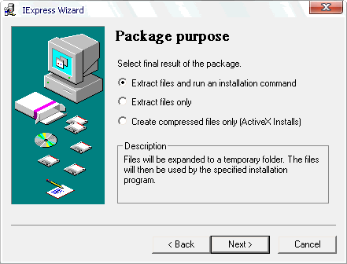
The only file that will be extracted
and run is "nettools.bat" so click Next again...
Give the program a name...
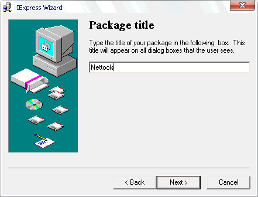
No prompt, but this could be used to
present a legal agreement or message to the user prior to running the .bat
file...
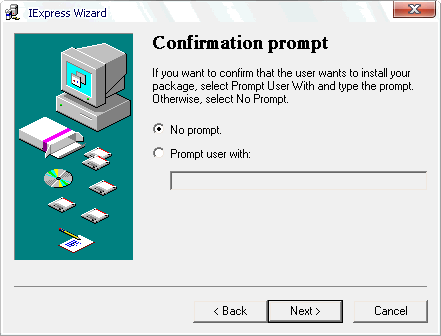
Basically the same as the Prompt command
above, but with I Agree/Disagree buttons instead of just "OK"
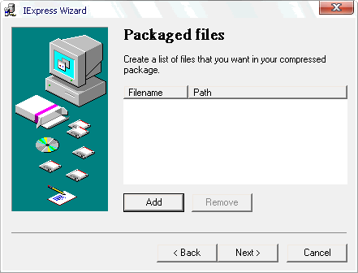
Click Add and add the nettools.bat file:
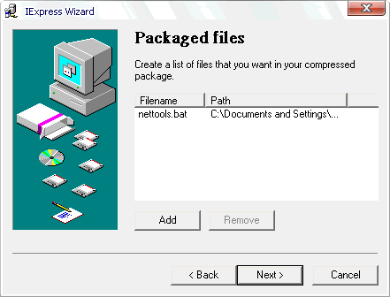
Since there is only one command added,
use the drop down box to select nettools.bat:
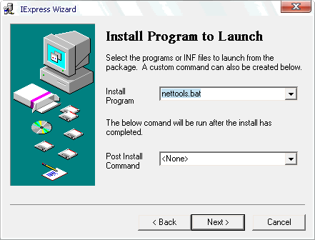
Leave the window size as default, that'll
be a normal size DOS box:
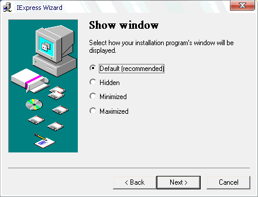
Here's a finished message prompt if
so desired:
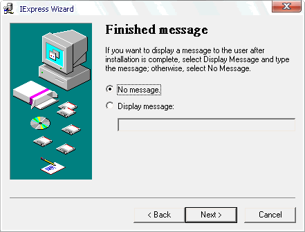
Give the executable a name and path
to save to:
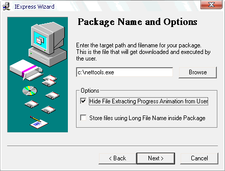
And check "Hide File Extracting
Progress Animation" as that speeds up the process of opening the .bat
(from a user perspective--they won't see a file extraction dialog)
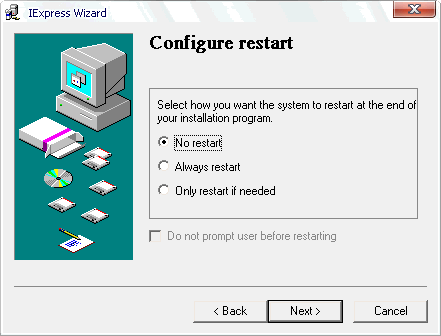
We don't need a restart after it runs,
so uncheck that...
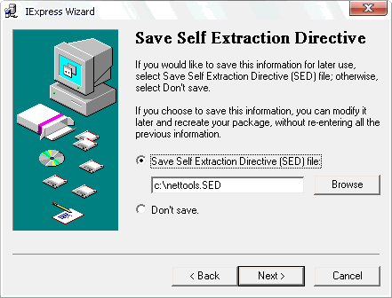
Save the project for modification later
if you'd like on this screen...
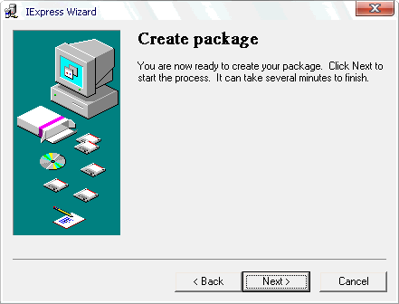
Finally it will compile an .exe you
can run directly from Windows Explorer or via a shortcut.
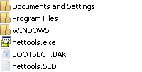
Now the .batch file is secured and can't
be broken with CTRL+BREAK, yet still operates from the commandline like
any other script.
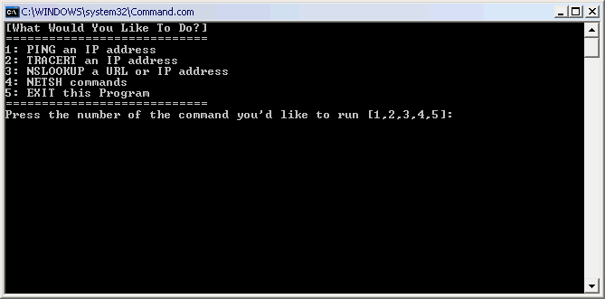